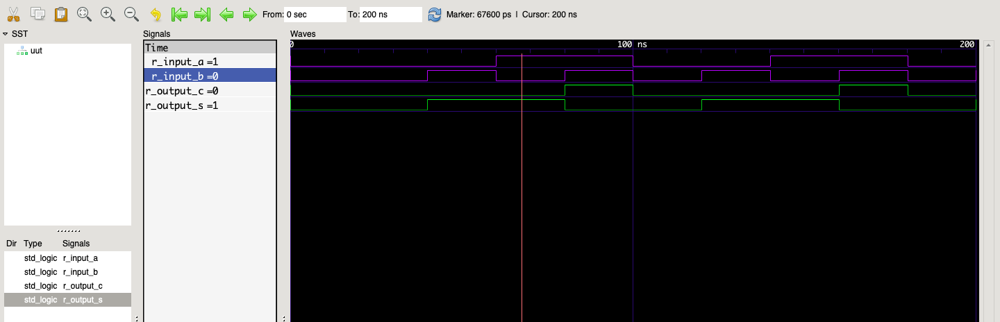

02 April 2019
The XILINX
Vivado Design Suite does not work natively on the macOS platform, so
you can not upload your code to your development board. What you
can do, however, is to run simulations of your VHDL code. This
post will show how to do it using ghdl and
gtkwave.
The first thing you have to do is install GHDL, which is “the
open-source compiler and simulator for VHDL”. It can be downloaded
from the releases
tab in their GitHub repo. The downloaded .tar archive will have
bin, include and lib folders.
After moving the contents of these files to somewhere in your
$PATH, (for example usr/local/bin) you can
check if the setup is working.
$~ which ghdl
/usr/local/bin/ghdl
$~ ghdl --version
GHDL 0.36-dev (20181129) [Dunoon edition]
Compiled with GNAT Version: GPL 2017 (20170515-63)
mcode code generator
Written by Tristan Gingold.
Copyright (C) 2003 - 2015 Tristan Gingold.
GHDL is free software, covered by the GNU General Public License. There is NO
warranty; not even for MERCHANTABILITY or FITNESS FOR A PARTICULAR PURPOSE.To be able to view the resulting waveforms, you can use gtkwave. On macOS systems, it
can easily be installed via brew cask install gtkwave.
After the installation is completed, gtkwave.app will be
available in your default Applications folder.
Let’s use a simple half-adder circuit coded in VHDL.
library ieee;
use ieee.std_logic_1164.all;
entity half_adder is
port(
A : in std_logic;
B : in std_logic;
S : out std_logic;
C : out std_logic
);
end half_adder;
architecture RTL of half_adder is
begin
S <= A XOR B;
C <= A AND B;
end RTL;To simulate this code, you will need a test-bench module. Here’s an example:
library ieee;
use ieee.std_logic_1164.all;
entity half_adder_tb is
end entity;
architecture Behavioural of half_adder_tb is
constant c_WAIT : time := 20 ns;
signal r_input_a : std_logic := '0';
signal r_input_b : std_logic := '0';
signal r_output_s : std_logic := '0';
signal r_output_c : std_logic := '0';
component half_adder is
port(
A : in std_logic;
B : in std_logic;
S : out std_logic;
C : out std_logic
);
end component half_adder;
begin
UUT : half_adder
port map (
A => r_input_a,
B => r_input_b,
S => r_output_s,
C => r_output_c
);
p_comb : process is
begin
wait for c_WAIT;
r_input_a <= '0';
r_input_b <= '0';
wait for c_WAIT;
r_input_a <= '0';
r_input_b <= '1';
wait for c_WAIT;
r_input_a <= '1';
r_input_b <= '0';
wait for c_WAIT;
r_input_a <= '1';
r_input_b <= '1';
end process;
end Behavioural;The files are named half_adder.vhd and
half_adder_tb.vhd. To run the simulation, first you have to
analyse and elaborate the source files.
ghdl -a half_adder.vhd
ghdl -e half_adder
ghdl -a half_adder_tb.vhd
ghdl -e half_adder_tbNotice how the elaborate commands do not have the file extensions in their parameters. Finally, we can run the simulation and output the results in a fst file to be opened by gtkwave.
ghdl -r half_adder_tb --stop-time=200ns --fst=half_adder.fst
open half_adder.fstThe open command will launch gtkwave and there
you can see the waveform results of the simulation. Simply by dragging
your signals from the left bar, you can observe them.

And there it is! You can now easily simulate your code in macOS before downloading it to your hardware.
Running each specific ghdl command can be a bit tedious.
You can write a simple bash script to automate some of the
task. For example, the following script takes the main module name -
half_adder in this case - and a stop time for the simulation. I
gave it the name mhdl, so I can simply run
mhdl half_adder 200ns
#!/bin/bash
ghdl -a $1.vhd
ghdl -e $1
ghdl -a $1_tb.vhd
ghdl -e $1_tb
ghdl -r $1_tb --stop-time=$2 --fst=$1.fst
open $1.fst\space